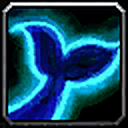
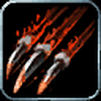
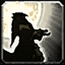
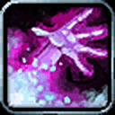

Elune's Light






Elune's Light is a 10% crit cooldown, best in long fights. Quickness now also gives 2% run speed.


Walk on Air, 1% haste and Read Ley Line, which is good for leveling but not in Feral combat.


War Stomp, Endurance (+5% health and 1% hit), Plainsrunning and Cultivation make a strong profession-grinding race.


Walk on Air, 1% haste and a self-cast run speed buff.